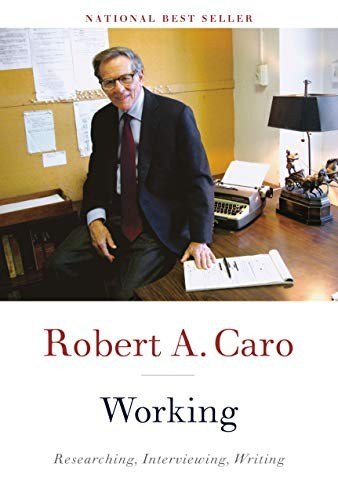

罗伯特·卡罗（Robert A. Caro）是美国最负盛名的传记作家。他的《权力掮客》（The Power Broker，1974）以1336页的篇幅剖析了纽约"建设沙皇"罗伯特·摩西如何在不担任任何民选职务的情况下，凭借公共机构的杠杆攫取并行使了超越历任市长和州长的权力，该书获得普利策奖，被现代图书馆评为二十世纪百大非虚构作品之一。此后四十余年，他全力投入《林登·约翰逊传》（The Years of Lyndon Johnson）系列，已出版四卷，其中第三卷《参议院之王》（Master of the Senate，2002）再获普利策奖。这些作品的共同主题只有一个词：权力——权力如何被获取，如何被运用，以及它对被统治者意味着什么。
2019年出版的《Working》是卡罗在八十三岁时写下的一部方法论自述。他深知以自己的工作节奏，一部完整回忆录可能耗时太久，于是决定先将关于调研、采访和写作的核心经验汇集成册。全书仅两百余页，篇幅虽短，内容却极为扎实——部分章节曾发表于《纽约客》和《巴黎评论》，另一些则为本书专门撰写。
书中最令人印象深刻的，是卡罗对"穷尽一切"的执念。他早年在长岛新闻报（Newsday）做调查记者时，编辑阿兰·海瑟韦（Alan Hathway）告诉他一句话："翻每一页。"（Turn every page.）这成为他此后半个世纪的工作信条。为了写《权力掮客》，他进行了522次采访，花七年时间翻阅摩西数十年积累的档案、备忘录、私人信件和政府文件。为了写约翰逊传，他和妻子伊娜搬到得克萨斯州丘陵地带住了三年，住进当地人的社区，只为亲身理解约翰逊成长环境中那种与贫困和孤立搏斗的生活质感——他相信，传记作家必须在身体和情感上真正进入被书写者的世界，而非仅仅依赖二手资料。
在采访方法上，卡罗分享了一个关键技巧：沉默。当受访者停止说话时，大多数记者会急于填补空白、抛出下一个问题。但卡罗学会了忍住不开口，让沉默持续——因为人们往往在沉默中感到不安，进而说出那些他们原本不打算透露的内容。他为一个关键人物反复进行数十次采访，直到对方在不经意间吐露真相。在写作层面，他至今坚持先用铅笔手写初稿，再在电动打字机上一遍遍修改。他拒绝使用电脑，认为手写的缓慢节奏迫使思维更深入，减少了仓促修订带来的错误。他还坚持一条自律原则：每天至少写三页，"没有某种配额，你就是在自欺欺人。"
卡罗始终认为，非虚构写作同样需要文学的自觉。节奏、氛围、场景感和人物塑造——"这些我们在讨论小说时才谈的东西，我认为历史和传记若要达成它们应有的效果，就必须同样认真地对待这些手法。"正是这种对叙事技艺的追求，使他的作品读起来不像学术著作，而像有悬念、有张力的长篇小说。
奥巴马曾在2010年为卡罗颁发国家人文奖章时说："我想起二十二岁时读《权力掮客》，完全被迷住了，我确信它塑造了我思考政治的方式。"《华尔街日报》评价《Working》"满是堪称典范的故事……以及他的独门技法"。《基督教科学箴言报》称之为"最典型的传记作家操作手册——窥见美国最杰出政治传记作家思维的窗口"。史蒂夫·福布斯（Steve Forbes）的评价更为直截了当："读完这本简短而杰出的书，你只能说一个字——哇。"《纽约时报》书评人哈罗德·埃文斯（Harold Evans）则写道，卡罗"以他的学术严谨、同理心、坦诚、机智和文采，实实在在地丰富了我们的生活"。
对中国读者而言，这本书的价值远不止于写作指南。卡罗用半个世纪的实践证明了一种工作哲学：真正深刻的认知来自穷尽式的调研、对细节近乎偏执的追究、以及拒绝走捷径的纪律。这与投资中的深度研究、企业管理中的实地调查、以及一切需要长期主义的事业，在精神上高度相通。无论你从事哪个领域，如果你相信扎实的功夫终究胜过聪明的取巧，这本书都值得一读。